Default Controls: [Camera] WASD - Move Camera IJKL - Pan Camera Shift / Space - Altitude C - Stop/Slow Movement Tab - Toggle Chunk View Right-Click - Toggle Look-Mode Right-Click and Drag - Quick Look [Basic UI] Left-Click - Use Tool 1-9 - Select Tool Mousewheel - Change Tool Distance ESCAPE - Cancel Action/Return to Select/Menu [General Tools] Control-Z - Undo Control-Y - Redo ALT - Show block info [Select] DELETE - Remove Selected Blocks Scroll Up - Increase Reach Scroll Down - Decrease Reach Middle Mouse - Reset Reach Alt-Z - Long-Distance Mode Alt(Hold) - Blocks-Only Modifier [Brush] E - Rotate Brush G - Roll Brush R - Increase Brush Size F - Decrease Brush Size Z - Line Tool Alt-E - Rotate Block Alt-G - Roll Block Alt-Click - Pick Block [Clone] E - Rotate Selection R - Roll Selection F - Flip Selection G - Mirror Selection Control - Snap Clone to Axis [Fill and Replace] R - Replace X - Swap [Chunk Control] Z(Hold) - Select Chunks ALT(Hold) - Deselect Chunks [Function] F1-F5 - Open World1-World5 O - Open from File N - Create New World Control-S - Save World Control-W - Close World Control-A - Select All Control-D - Deselect Control-G - Teleport to Coordinates Control-F - Change view distance Control-M - Disable Renderer (Debug) Alt-F4 - Close MCEdit
Here's a quick overview of a few of the different tools we have:
-
Selection: Make a selection by marking its corners. Press again to switch
corners.
-
Brush: "Paints" the landscape using a selection of brushes. Use Alt to pick block.
-
Clone: Copies the selected blocks. Click to set the copy down, then press "Clone"
to clone.
E R F G
to transform blocks.
- Fill: Fills the selection with a chosen block type, optionally replacing another type. R to start replacing, E to swap materials.
- Filter: External scripts for advanced functionality.
- Import: Import a Schematic file or an entire level into the current world.
- Player: Modifies, deletes, and adds players in the world.
- Spawn: Click to move the player's spawn. Press twice to teleport.
- Chunk: Create, delete, and light chunks. Prune away all of the chunks outside the selection.
- NBT Edit: Edit the raw NBT data for the loaded world. Use with caution.
There are a few Nudge buttons scattered around. To use them, click and hold down on one. While holding the mouse button, use the movement keys (defaults: WASDShiftSpace) to move the related item around. Hold Right Click to nudge further.
If you have a powerful computer, press Control-F to see farther.
Selection Tools
Mark a selection using blue and yellow cubes. Here is a selection in progress.

A completed selection.

The selection tool can also be used to export schematics and do other basic tasks. Some tools cannot be used without a selection.
Brush Tool:
The brush tool allows you to "Paint" the world using preset shapes, you can use RFEG to Increase size, Decrease size, rotate and roll this tool. The varied version will randomly distribute the blocks you select based on selected weightings.

LINE BRUSH:
Hold Z after placing a brush and click a second point to create a solid line of that brush. Line spacing adjusts how close together brushes are.
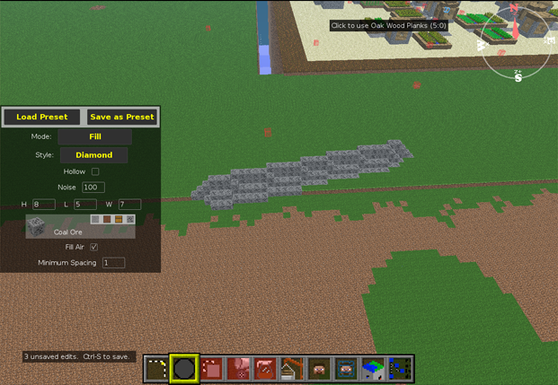
The line tool works from the last brushed point, so you can continue from the end of your last line.
ERODE:
You can also erode the terrain, making it more natural. To use this tool set the size and strength you want and click and drag over the area you wish to erode.
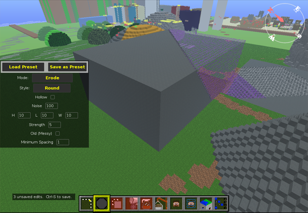
And after.
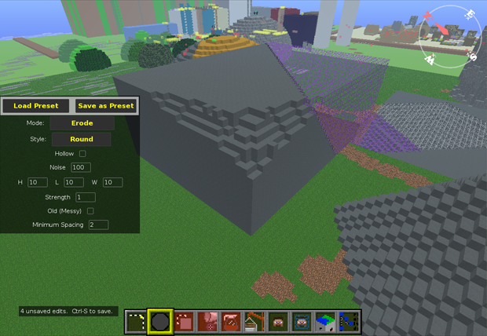
It is recommended to make multiple lower intensity passes for best results. If the brush is still too strong at strength 1, turn up Minimum Spacing.
FLOOD FILL:
This brush will systematically replace all blocks of the same type touching the block you click on. This will go on until you either cancel the operation or it finishes.
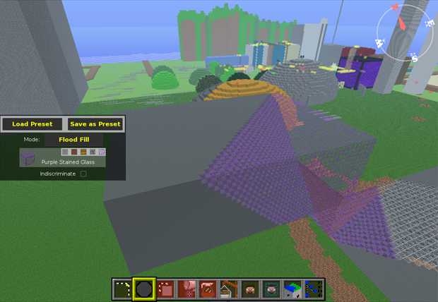
An interrupted flood fill operation.
PASTE:
The paste brush simply brushes an imported schematic.
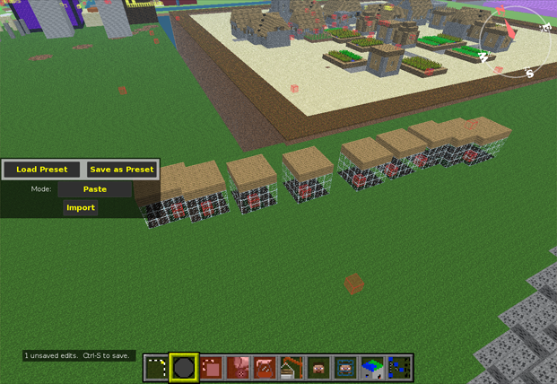
REPLACE AND VARIED REPLACE:
The replace and varied replace tools replace the block selected in the first slot with the block(s) selected in the lower box(es).
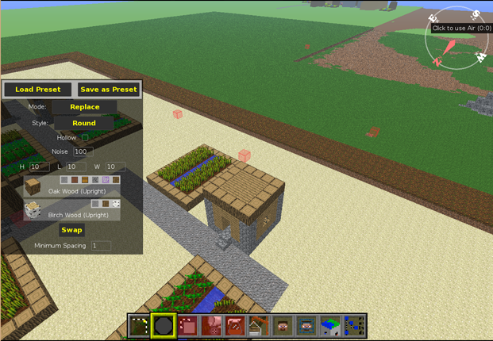
After:
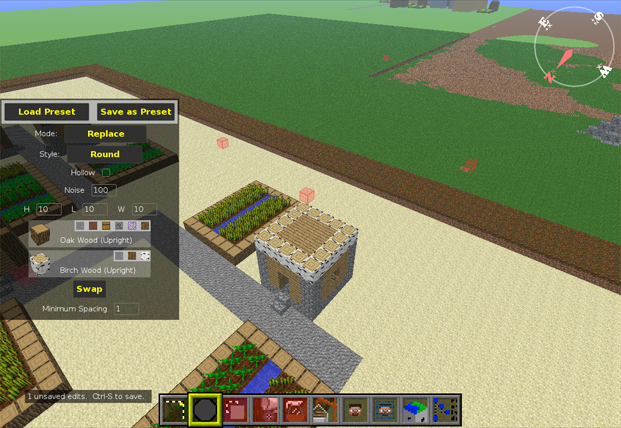
And using the varied replace:
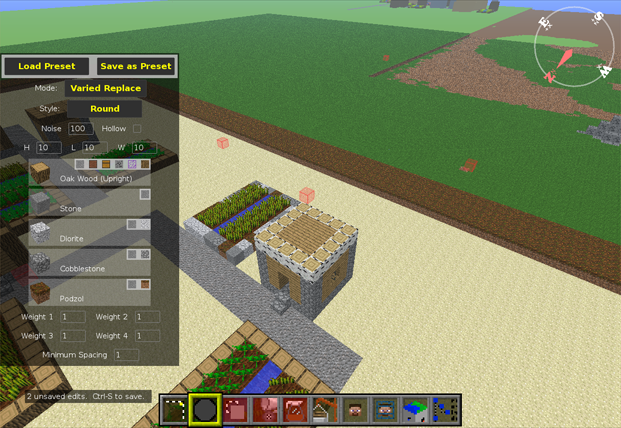
TOPSOIL:
Topsoil works by replacing the top layer of wherever you brush with the selected block. Depth is selectable.
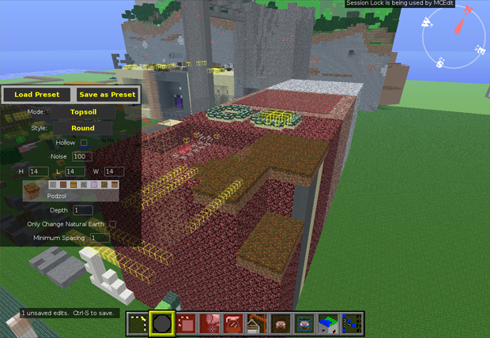
Clone Tool:
Quickly copy blocks within the same level. The selected blocks are cloned into the green box and will
follow your cursor around until you click. Click the green selection again to pick it back up.

Use the keys E R F G to rotate, roll, flip, and mirror a cloned structure.

Once you are happy with the clone's location, click Clone or press Enter to apply, a selection will appear over the cloned area when complete.

Fill Tool:
Pretty self-explanatory, fills the selected area with the chosen block. Can also replace certain blocks.

Filter Tool:
The filter tool allows the use of external plugins called filters for advanced functions not covered by other tools. The filters folder can be found by clicking the Config Files button on the main menu.
To use the filter tool; first select the area you wish to modify then select the filter you wish to use. After you've finished configuring the filter click Filter to apply.

The forester filter in action. *Note, forester requires selection to include ground.

Import tool:
The import tool lets you import blocks from different sources: It can place blocks previously saved using the select tool to a schematic.
It can also import an entire level into another level. It will ask you to choose a level or schematic. After you've chosen,
the level or schematic will appear in the green box. Although it may take a few seconds to display the
contents of the import, it is fully loaded and can be placed without waiting for everything to render.

As before, you can click to pick the blocks up, and use E R F to rotate, roll, and flip them.

Press ENTER or click Import to construct. Constructions of up to 64 million blocks should take less than a minute. The copy is done once you regain control. You should press Control-S to save your level now. The lighting recalculation for this city took about 3 minutes on a Core i5.

Player Tool:
Tool used to add/delete/move players in your world. Mostly self-explanatory. Align to Camera moves the selected player to your current location.
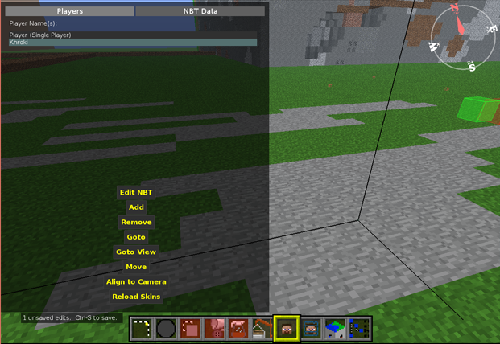
EditNBT allows you to modify a player's NBT data, use at own risk. See NBT section for more details.
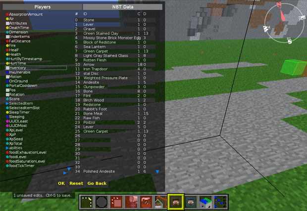
Spawn Tool:
Used to move or view the world's spawn. Click to apply a new spawn point.
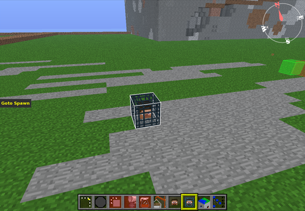
Chunk tool:
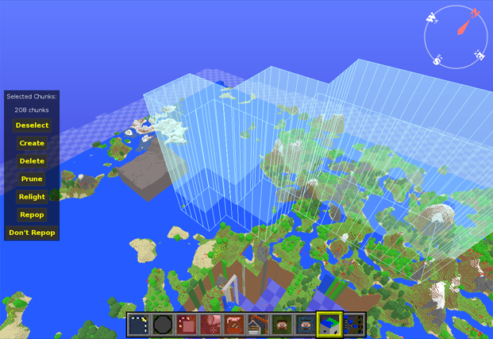
When you pick the Chunk tool, the visible selection is
automatically expanded to cover all of the chunks it touches. Press Create to create all missing chunks in the selection, ignoring any chunks already present.
Press Destroy to remove any chunks within the selection. Use Prune to keep all of the chunks in the selection, and delete the ones outside.
Use Repop to mark chunks for repopulation of ores and structures next time minecraft loads the chunk.
All of these will ask you for confirmation because there's no way to undo them. Use TAB to get a better view for chunk pruning.
Finally, you can press Relight to fix any bad lighting within the selected chunks. If other programs leave your level full of black spots, you can fix it with this.
NBT Editor:
Used to modify the raw NBT data of the world. Use at own risk. To modify a more specific area or object use the NBT editor filter.
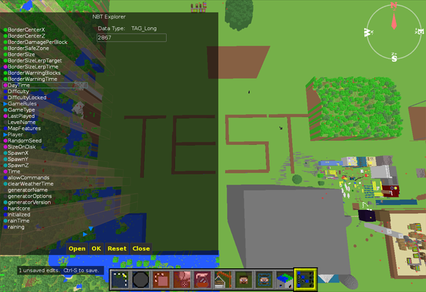